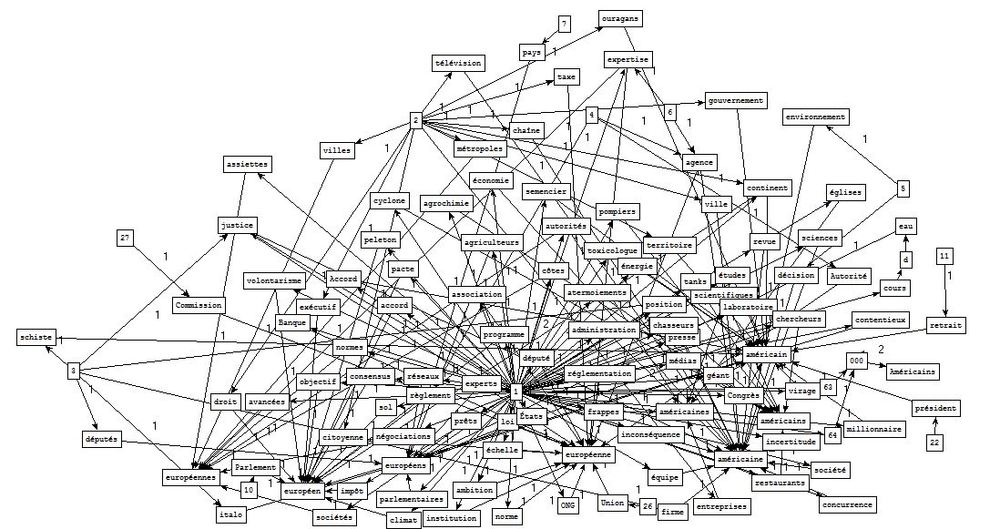

BàO 4 : Visualisation
I. Spécification
Boîte à Outils série 4
Visualisation des cooccurrences des motifs
Données
Index des patrons morphosyntaxiques et des motifs
II. Outils
patron2graphe.exe
III. Résultats
Un mot prend son sens dans le contexte. A partir de cette idée, nous avons créé deux sous corpus pour visualiser la cooccurrence des motifs. Nous détaillerons ce choix de rubriques dans la Rubrique Analyse.
Sous corpus 1 : Planète(3244) + A la Une(3208)
MOTIF=\b((c|C)limat dans les index de 3208
Index : NomAdj-Cordial-3208
Index : NomAdj-TreeTagger(french)-3208
Index : NomAdj-TreeTagger(french-oral)-3208

MOTIF=\b((a|A)méricain)|\b((e|E)uropéen) dans les index de 3244
Index : NomAdj-Cordial-3244

Index : NomAdj-TreeTagger(french)-3244
Index : NomAdj-TreeTagger(french-oral)-3244
Sous corpus 2 : Sports(3242) + A la Une(3208)
MOTIF=\b(o|O)lympique dans les index de 3208 et 3242
Index : NomAdj-Cordial-3208
Index : NomAdj-TreeTagger(french)-3208
Index : NomAdj-TreeTagger(french-oral)-3208
Index : NomAdj-Cordial-3242
Index : NomAdj-TreeTagger(french)-3242
Index : NomAdj-TreeTagger(french-oral)-3242
MOTIF=\b(c|C)hampion dans les index de 3208 et 3242
Index : NomAdj-Cordial-3208
Index : NomAdj-TreeTagger(french)-3208
Index : NomAdj-TreeTagger(french-oral)-3208
Index : NomPrpDetNom-Cordial-3208
Index : NomPrpDetNom-TreeTagger(french)-3208
Index : NomPrpDetNom-TreeTagger(french-oral)-3208
Index : NomAdj-Cordial-3242
Index : NomAdj-TreeTagger(french)-3242
Index : NomAdj-TreeTagger(french-oral)-3242
Index : NomPrpDetNom-Cordial-3242
Index : NomPrpDetNom-TreeTagger(french)-3242
Index : NomPrpDetNom-TreeTagger(french-oral)-3242